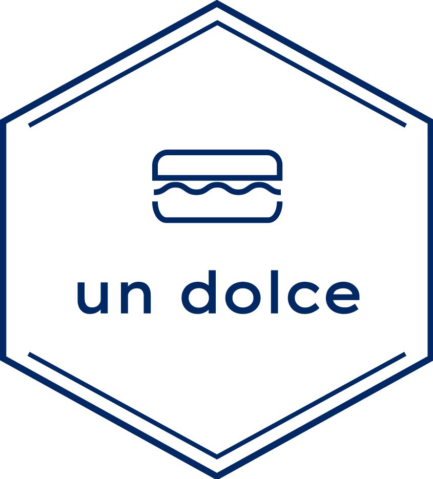

In 2020, Un Dolce started from Firenze, Italia.
Since its opening, we were loved by macaron lovers all over the world.
In 2020, Un Dolce started from Firenze, Italia.
Since its opening, we were loved by macaron lovers all over the world.
A delicious Italian meringue,
So it all begins with whole blanched almonds from California
– the world center for almonds –
that are ground and mixed with confectioner’s sugar.
Egg whites are whisked
until peaks form and natural food colorings are added
to give the macarons their subtle colors.
(The color is mixed in at this point so that it is perfectly uni- form.)
As much as taste, color is essential: it too can make the mouth water.
Perfectly shaped shells,
The appareil is poured into a machine called a trémie.
This is the only stage that isn’t performed by hand,
because only a machine can form identical shells.
The 14 macaron flavors and the 5 “Incroyables” are made daily,
moving from the lightest to the darkest colored so none are stained.